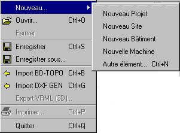

Table des matières
Menu Fichier

Le menu Fichier est
le point de départ pour la création ou l'ouverture d'un projet
ou d'autres éléments métiers.
Il comporte les items
suivants:
- "Nouveau..."
permet de créer un nouvel objet métier (un projet, un site,
un bâtiment, etc ...)
- "Ouvrir ..."
affiche le contenu de la bibliothèque
d'objet,
- "Fermer" ferme
le projet et/ou le site courant,
- "Enregistrer",
sauvegarde le contenu de l'élément en cours (projet,
site, ...) en XML,
- "Enregistrer sous",
sauvegarde le projet en cours sous un autre nom,
- "Import BD-TOPO",
importe une base de données BD TOPO™ (IGN) au format DXF,
- "Import DXF GEN",
importe un plan de masse de site au format DXF,
- "Export VRML",
permet d'exporter la scène 3D du modeleur actif dans un format standard
(VRML) destiné à la visualistion 3D sur Internet.
- "Imprimer", permet
d'imprimer la vue du modeleur actif (c.f. rubrique "Impression")
- "Quitter", quitte
l'application en vérifiant l'état de sauvegarde du Projet/Site
en cours
A l'ouverture ou à
la création d'un projet, celui-ci vient se placer dans la fenêtre
de gestion de projet et devient le projet courant ou projet de travail.
Il en va de même pour le site associé au projet, ou pour un site
nouvellement créé ou ouvert, l'arborescence du site est représentée
dans la fenêtre de gestion de site et il devient
le site courant ou site de travail.